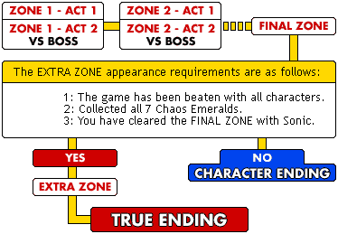
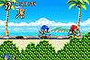

| GAME START (1 PLAYER) |
|
This is a one-player-only game mode.
In the main mode of this game, you control the character to clear each zone. Many of the zones are divided into Act 1 and Act 2, with Act 2 being a confrontation with a boss mech piloted by Dr. Eggman. |
|

|
| VS (2 to 4 PLAYERS) | ||||
|

If you connect the Game Boy Advance link cable, up to four players can enjoy the game at the same time. If you all have a copy of the game, Multi-Cartridge Battle will be good for you. If you are the only one with a copy, don't worry, One Cartridge Match is an enjoyable experience as well! |
||||
|
| TIME ATTACK (1 PLAYER) |
|
In this mode, the player selects a character and Act, and competes for the fastest time to clear the game.
Act 1 is to pass the clear panel, and Act 2 is to fight for time to open the capsule. |
| OPTIONS ( EXTRA ) | ||||||||||||||
|
| SPECIAL STAGE (1 PLAYER) | ||
|

© SEGA